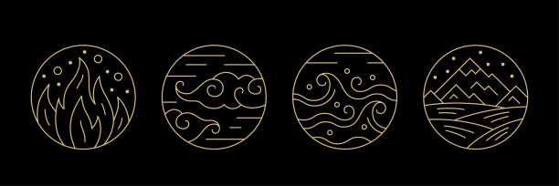

Tällä sivustolla on runokoelmani, jonka teema on 4 elementtiä, joista inspiraatio on lähtenyt. Pääelementtejä ovat Vesi, Tuli, Maa ja Ilma. Jokaiselle niistä olen luonut yhden runon. Elementeissä on omaa voimaa ja oma luonne, jota olen yrittänyt välittää runojen kautta.
Elementeistä tulee mieleen erilaisia sanoja tai teemoja. Sanoja ja teemoja, joita liitin veteen, olivat kyyneleet, kaiho, suru ja puhdistuminen. Tuleen taas liekit, energia, tuho ja tuhka. Maahan liitin sanat lämpö, kukat, niityt ja muistot. Ilmaan liitin teeman uudet tuulet, tuulen viemää.
Sivustolle saattaa tulla tulevaisuudessa lisää runoja oman elementtinsä (Vesi, Tuli, Maa, Ilma) alle.
Pääset navigoimaan yläpalkista kuhunkin osioon. Voit myös edetä tämän jälkeen järjestyksessä.